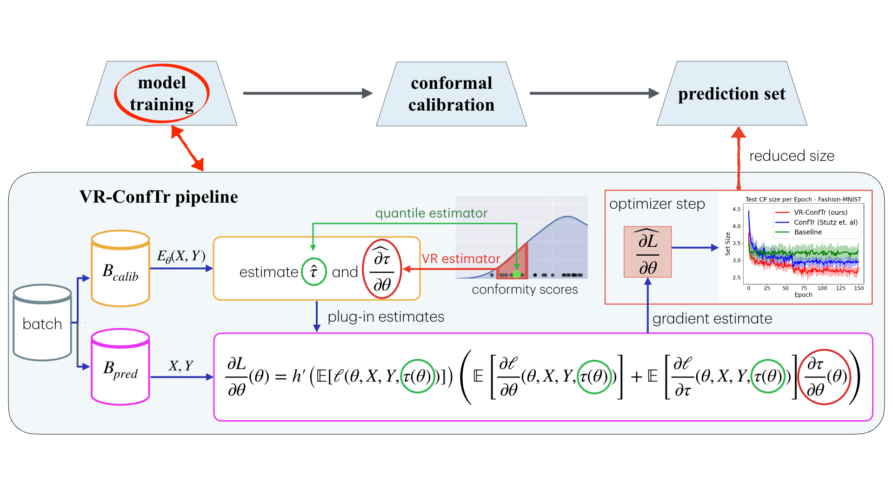
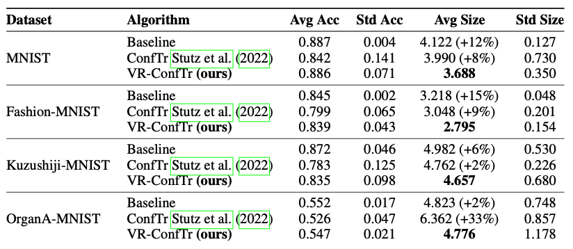

Abstract
Conformal prediction (CP) is a distribution-free framework for achieving probabilistic guarantees on black-box models. CP is generally applied to a model post-training. Recent research efforts, on the other hand, have focused on optimizing CP efficiency during training. We formalize this concept as the problem of conformal risk minimization (CRM). In this direction, conformal training (ConfTr) by Stutz et al. (2022) is a technique that seeks to minimize the expected prediction set size of a model by simulating CP in-between training updates. Despite its potential, we identify a strong source of sample inefficiency in ConfTr that leads to overly noisy estimated gradients, introducing training instability and limiting practical use. To address this challenge, we propose variance-reduced conformal training (VR-ConfTr), a CRM method that incorporates a variance reduction technique in the gradient estimation of the ConfTr objective function. Through extensive experiments on various benchmark datasets, we demonstrate that VR-ConfTr consistently achieves faster convergence and smaller prediction sets compared to baselines.
Training Pipeline
Experimental Results
